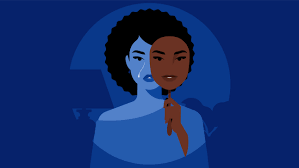

Have you ever sat in a classroom, surrounded by your peers as they confidently discuss ideas, and suddenly been hit by a sinking thought: I don’t belong here. I’m not as smart or capable as everyone else around me? Or perhaps you’ve walked into a room filled with accomplished professionals, and despite all your incredible accomplishments, you feel like an imposter sneaking into a place you don’t deserve to be? That knot in your stomach, the racing thoughts of I’ll be exposed as a fraud at any moment, aren’t uncommon. They stem from a phenomenon known as imposter syndrome.
Impostor syndrome refers to a persistent feeling of self-doubt, inadequacy, or the belief that one's success is undeserved despite clear achievements. People experiencing this often attribute their accomplishments to external factors such as luck or assistance from others, rather than their own abilities. These feelings can manifest through perfectionism, over-preparation, procrastination, or fear of being "exposed" as a fraud, which can lead to mental and emotional strain, including burnout, anxiety, and even depression. If you do suffer from these things, don’t worry, you’re not alone: up to 80% of people have experienced some form of imposter syndrome before.
However, for people of color, the experience is often exacerbated by systemic inequalities discrimination. These feelings are intensified in predominantly white spaces, where they may face both overt and subtle biases. Individuals from marginalized backgrounds, especially those who are the first in their families to have the chance to enter elite academic or professional environments, are proven to experience heightened levels of self-doubt. Oftentimes, failing at one task commonly introduces the fear of a white person thinking something like, so all of these people are incapable of doing this.
For instance, recent studies have shown that African American students suffer from symptoms such as depression and guilt derived from imposter syndrome at a higher rate than other groups. Black professionals also often encounter environments where their presence is met with skepticism, forcing them to work twice as hard to prove their worth. This phenomenon, sometimes referred to as "stereotype threat," creates a constant undercurrent of stress and can amplify imposter syndrome.
Similarly, Asian Americans, who are often stereotyped as the “model minority,” may feel pressured to excel in every field, which can lead to burnout and self-doubt when they fall short of certain expectations. Many students of color, collectively, may feel burdened by other stressors, like inadequate financial aid, pressure from work outside of school, discrimination, being first generation, and many more. A lot of underrepresented populations may also feel like they were only accepted into college because of the color of their skin.
The consequences of imposter syndrome are far-reaching. Beyond emotional distress, it can hinder career advancement and mental health. Research has shown a strong correlation between imposter syndrome and anxiety, depression, and reduced job performance and satisfaction.
However, it is important to note that imposter syndrome is also prevalent among women more so than men, especially those in executive positions. While men hold 62% of manager positions, women only hold the other 38% (and that statistic is divided based on race, too.) Women are often thought of to be less intelligent, more emotional, and only good for beauty. BIPOC have even more stereotypes held over their head.
There are many ways for us to overcome imposter syndrome. Firstly, we should acknowledge our achievements, and recognize how accomplished we are for having them. We are just as qualified as others! Next, it is important to stop comparing yourself to others and understand that what makes you unique sets you apart from others. And one of the most important: practicing self love! Treat yourself with kindness and compassion no matter what. Just because you think you didn’t try hard enough or you feel like everyone is doing better than you, doesn’t mean you are undeserving of compassion. And in extreme cases, therapy is always an option. Talking to someone helps more than you know. Remember the importance of your self-worth!